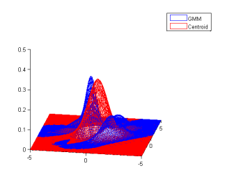
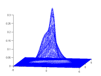
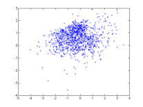
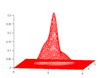

Using jMEF in Matlab is pretty straightforward although there are a few things that you should care of
javaclasspath('D:\Work\jMEF.jar'); import jMEF.*;Now, you can use jMEF in matlab, just try to create a simple GMM
n=5; dim=4; mm=MixtureModel(n); mm.EF=MultivariateGaussian; for i=1:n mm.weight(i)=1/n; mm.param(i) = PVectorMatrix.RandomDistribution(dim); end
p=Clustering(); classname=p.getClass.getClasses; MessageTypes = classname(1).getEnumConstants;MessageTypes(1) now contains the Enum LEFT_SIDED, MessageTypes(2) now contains the Enum RIGHT_SIDED and MessageTypes(3) now contains the Enum SYMMETRIC. You can now call a clustering method with your favorite centroid, for instance :
symmetric_centroid=jMEF.Clustering.getCentroid(mm,MessageTypes(3));
% Check my type (NATURAL, SOURCE, OR EXPECTATION) mm.param(1).type mm.param(2).type % The type is SOURCE, I can compute Kullback Leibler between those two. mm.EF.KLD(mm.param(1),mm.param(2)); % I can also print the values, since it is the famous (MU,SIGMA)=(mean,covariance) Notation mm.param(1) % If now, I need to call a centroid function which only supports NATURAL parameters. % Let us convert the parameters SOURCE->NATURAL for i=1:n mm.param(i)=mm.EF.Lambda2Theta(mm.param(i)); end % Now, I can call my centroid function symmetric_centroid=jMEF.Clustering.getCentroid(mm,MessageTypes(3)); % The result is in NATURAL paramters too % so if you want to print it with your favorite (MU,SIGMA) Notation, convert it NATURAL->SOURCE symmetric_centroid=mm.EF.Theta2Lambda(symmetric_centroid);
This is a demo of the wrapper, it loads jMEF (make sure you have jMEF.jar and that the javaclasspath is correct). Then it does some simple operations, creates a random GMM, compute its symmetrized bregman centroid (in this case Kullback-Leibler), then plot it.
|  |
A simple demo, it draws 1000 random samples from a GMM and tries to estimate it using BregmanSoftClustering. It requires kmeans (contained in tools.jar).
Download Demo 2 (m) Required Package (.jar)
|  |  |  |
| One random GMM | 1000 samples from this GMM | GMM estimated from samples |
Kullback Leibler divergence between original and estimated: 0.040888 >>